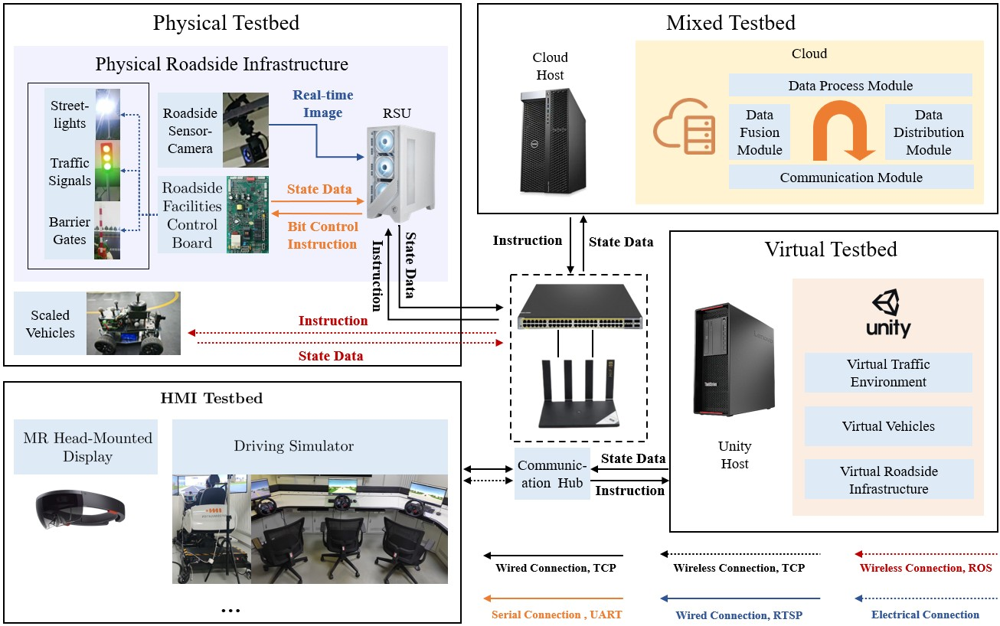

Sufficient testing under corner cases is critical for the long-term operation of vehicle-infrastructure cooperation systems (VICS). However, existing corner-case generation methods are primarily AI-driven, and VICS testing under corner cases is typically limited to simulation. In this paper, we introduce an L5 ''Interactable'' level to the VICS digital twin (VICS-DT) taxonomy, extending beyond the conventional L4 ''Optimizable'' level. We further propose an L5-level VICS testing framework, IMPACT (Interactive Mixed-digital-twin Paradigm for Advanced Cooperative vehicle-infrastructure Testing). By enabling direct human interactions with VICS entities, IMPACT incorporates highly uncertain and unpredictable human behaviors into the testing loop, naturally generating high-quality corner cases that complement AI-based methods. Furthermore, the mixedDT-enabled ''Physical-Virtual Action Interaction'' facilitates safe VICS testing under corner cases, incorporating real-world environments and entities rather than purely in simulation. Finally, we implement IMPACT on the I-VIT (Interactive Vehicle-Infrastructure Testbed), and experiments demonstrate its effectiveness.
